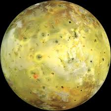
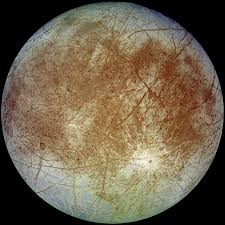

O Gigante Gasoso
Júpiter é o maior planeta do Sistema Solar e o quinto a partir do Sol. É um gigante gasoso com uma massa mais de duas vezes e meia a soma de todos os outros planetas do Sistema Solar.
Principais Luas

Io
A lua mais vulcanicamente ativa do Sistema Solar

Europa
Possui um oceano líquido sob sua superfície gelada

Ganímedes
A maior lua do Sistema Solar